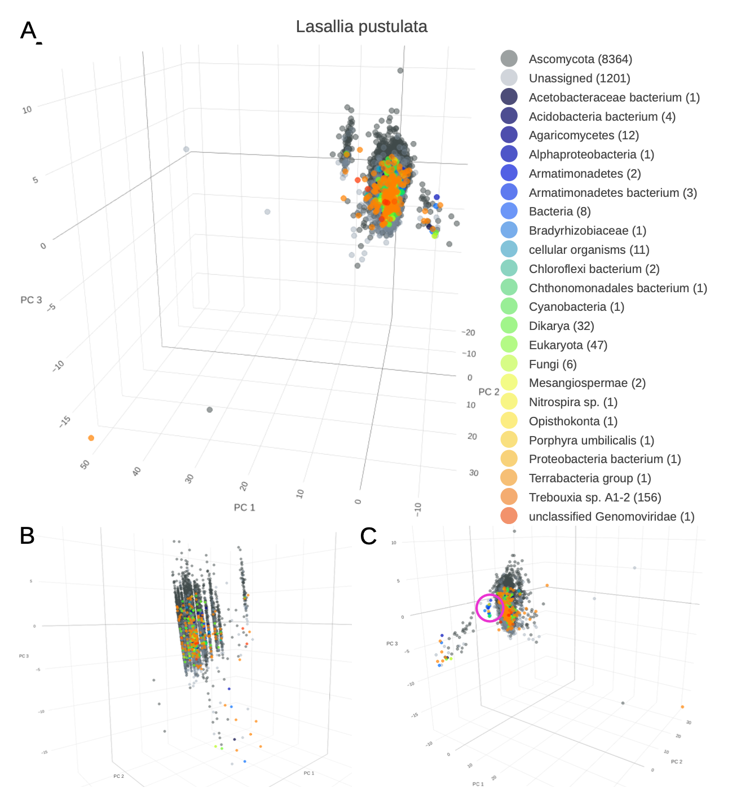

QUALITY CONTROL


Is my genome "clean"?
Contamination
Horizontal gene transfer


Freya Arthen (2022), Master thesis
https://github.com/BIONF/taXaminer

Freya Arthen (2022), Master thesis
Is my gene set complete? And how complete is it?


https://github.com/BIONF/fCAT